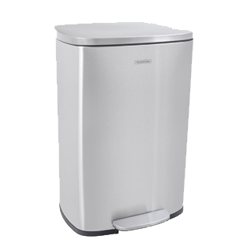
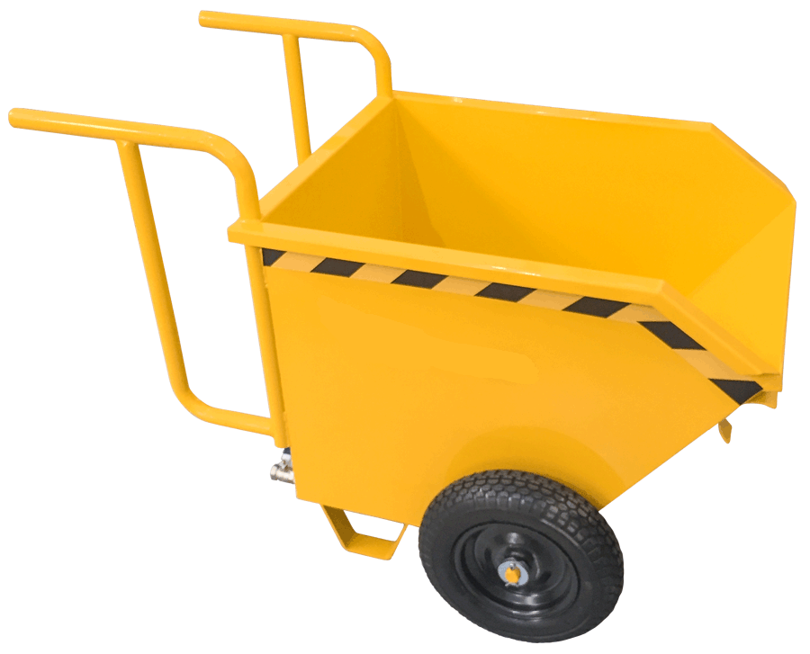

Projetos e fabricação

Lixeira Aço Inox
Lixeira de Aço Inox elegante tamanho 40X20. Ideal para uso comercial e corporativo.

Caçamba Manual
Caçamba manual de aço 120X80. Comporta até 300KG. Ideal para uso de transporte industrial, como materias de construção, entulho e etc.